Probabilistic forecasting with timestralR
Stefan Janse van Rensburg
Source:vignettes/timestralR.Rmd
timestralR.RmdtimestralR runs Mistral AI’s Timestral time-series foundation models directly in R. Timestral is a zero-shot forecaster: it is pretrained on a large corpus of time series, so you give it a context (the history you have) and a horizon, and it returns a full predictive distribution without any fitting. Every forecast has 21 quantiles per step, from the 1% to the 99% level.
The package has no Python or PyTorch dependency. The official
safetensors checkpoints are downloaded once, and the
transformer runs natively on R’s BLAS.
This vignette covers the whole interface:
- loading a model and making a first forecast;
- working with the forecast: quantiles, data frames and plots;
- multivariate series and batches of series;
- missing values and observation masks;
- numeric and categorical covariates;
- time indexes from
ts,zooandxts; - the tidyverts (
tsibbleinput and output,fableintegration) and the forecast package; - evaluating forecasts: scoring and rolling-origin backtests;
- options, backends, and using the package in parallel code.
library(timestralR)
library(ggplot2)
library(patchwork)
theme_set(theme_minimal(base_size = 10) +
theme(legend.position = "bottom",
panel.grid.minor = element_blank(),
plot.title = element_text(face = "bold")))1. Loading a model
Checkpoints come in four sizes: "5M",
"28M", "123M" and "209M". They
range from 21 MB to 837 MB on disk. timestral_load()
downloads a checkpoint to a per-user cache on first use; afterwards it
loads from disk. A local directory holding config.json and
model.safetensors also works, as does any Hugging Face
repository ID ("owner/name") that holds a Timestral
checkpoint, such as a fine-tuned model.
m <- timestral_load("28M")
m
#> <timestral_model> 49b26409ac87b5935539a5d8ffe7f397b720db47 d_model = 384 layers = 12 max_context = 32768
#> covariates: past and known-futureThe printout also says which covariates the checkpoint can condition
on; timestral_supports_covariates() and
timestral_supports_known_covariates() return the same as
TRUE or FALSE, which is useful when code
receives a checkpoint it did not choose. Every official checkpoint
forecasts the same 21 quantile levels (another checkpoint’s own levels
are in each forecast’s fc$levels):
timestral_levels()
#> [1] 0.01 0.05 0.10 0.15 0.20 0.25 0.30 0.35 0.40 0.45 0.50 0.55 0.60 0.65 0.70
#> [16] 0.75 0.80 0.85 0.90 0.95 0.992. A first forecast
timestral_forecast() takes a model, a series
y, and a horizon h. Here we forecast three
years of the classic airline passengers series.
fc <- timestral_forecast(m, AirPassengers, h = 36)
fc
#> <timestral_forecast> 1 variate(s), h = 36, 21 quantiles
#> med
#> 1 447.3
#> 2 416.7
#> 3 469.4
#> 4 480.4
#> 5 496.5
#> 6 576.1predict(m, AirPassengers, h = 36) is the same call
through R’s predict() generic. Timestral is zero-shot, so
there is no fitted model to predict from: the series itself is the
newdata.
The plot() method draws a fan chart: the observed
history, the median forecast, and nested 50%, 80%, 90% and 98% central
intervals.
plot(fc, main = "AirPassengers: 36-month Timestral forecast",
ylab = "Passengers (thousands)")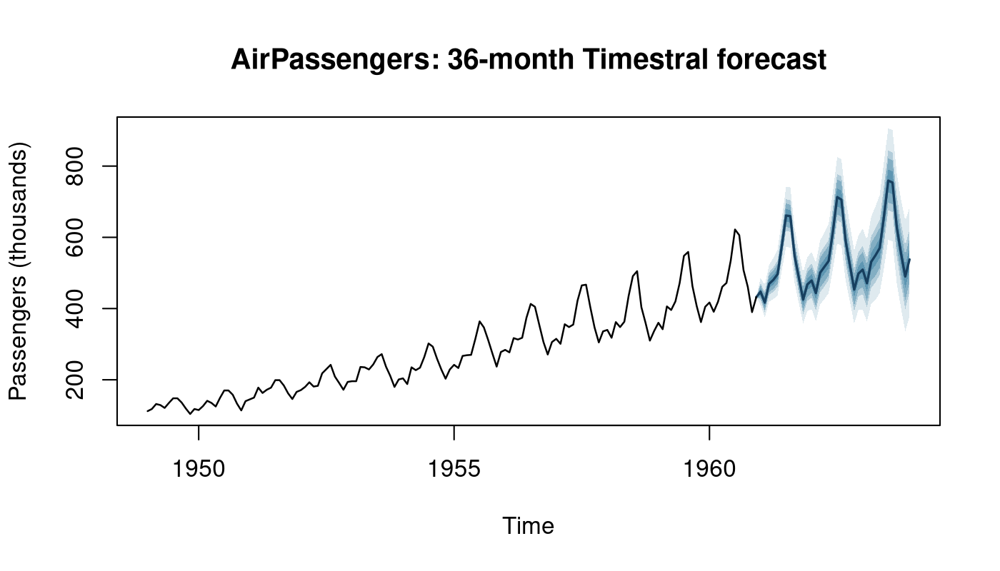
plot(): history, median and nested central intervals.Extracting results
The full forecast is a (variate, step, level) array in
fc$quantiles. The accessors return single levels; because
the input was a ts, they return a ts that
starts right after the data.
dim(fc$quantiles)
#> [1] 1 36 21
window(timestral_median(fc), end = c(1961, 6))
#> Jan Feb Mar Apr May Jun
#> 1961 447.3 416.7 469.4 480.4 496.5 576.1
window(timestral_quantile(fc, 0.9), end = c(1961, 6))
#> Jan Feb Mar Apr May Jun
#> 1961 465.2 439.3 494.0 506.9 525.3 608.9as_forecast_df() gives a tidy long data frame with one
column per quantile level and the forecast time:
head(as_forecast_df(fc)[, c("variate", "step", "time", "q10", "q50", "q90")])
#> variate step time q10 q50 q90
#> 1 V1 1 1961 430.6 447.3 465.2
#> 2 V1 2 1961 395.6 416.7 439.3
#> 3 V1 3 1961 446.4 469.4 494.0
#> 4 V1 4 1961 454.9 480.4 506.9
#> 5 V1 5 1961 469.4 496.5 525.3
#> 6 V1 6 1961 547.4 576.1 608.9ggplot2
When ggplot2 is installed, autoplot() draws the same fan
chart as a ggplot object, so the usual ggplot2 modifications apply.
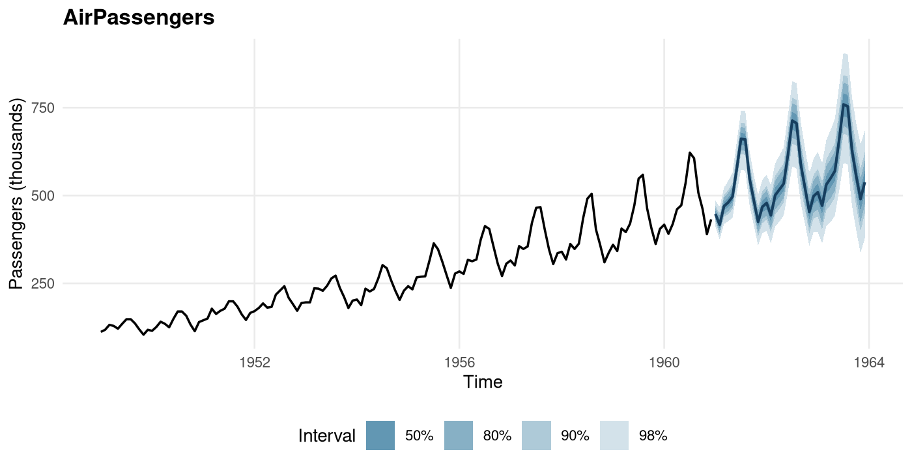
autoplot().autolayer() adds only the forecast bands and median to
an existing plot. A natural use is a backtest. Hold out the last three
years, forecast them, and overlay what actually happened:
train <- window(AirPassengers, end = c(1957, 12))
test <- window(AirPassengers, start = c(1958, 1))
fc_bt <- timestral_forecast(m, train, h = length(test))
actual <- data.frame(time = as.numeric(time(AirPassengers)),
value = as.numeric(AirPassengers),
part = ifelse(time(AirPassengers) < 1958,
"training data", "held out"))
ggplot(actual, aes(time, value)) +
autolayer(fc_bt) +
geom_line(aes(colour = part), linewidth = 0.5) +
scale_colour_manual(values = c("training data" = "black",
"held out" = "#D55E00"), name = NULL) +
labs(title = "Backtest: forecasting 1958-1960 from data up to 1957",
x = NULL, y = "Passengers (thousands)")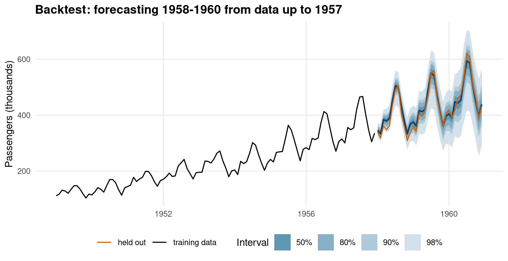
How well calibrated are the intervals here? The share of held-out months inside each central interval:
q <- fc_bt$quantiles[1, , ]
lv <- fc_bt$levels
inside <- function(p) {
lo <- q[, which.min(abs(lv - (1 - p) / 2))]
hi <- q[, which.min(abs(lv - (1 + p) / 2))]
mean(test >= lo & test <= hi)
}
data.frame(interval = c("50%", "80%", "90%", "98%"),
coverage = sapply(c(0.5, 0.8, 0.9, 0.98), inside))
#> interval coverage
#> 1 50% 0.5000
#> 2 80% 0.8333
#> 3 90% 0.9722
#> 4 98% 1.00003. Multivariate series and batches
Variates of one series are forecast
jointly: the model attends across them, so related series can
inform each other. Pass a matrix, data frame or mts with
one column per variate.
deaths <- cbind(male = mdeaths, female = fdeaths)
fc_mv <- timestral_forecast(m, deaths, h = 24)
dim(fc_mv$quantiles)
#> [1] 2 24 21
autoplot(fc_mv) +
scale_fill_brewer(palette = "Purples", name = "Interval") + # restyle bands
labs(title = "UK lung disease deaths, forecast jointly", y = "Deaths")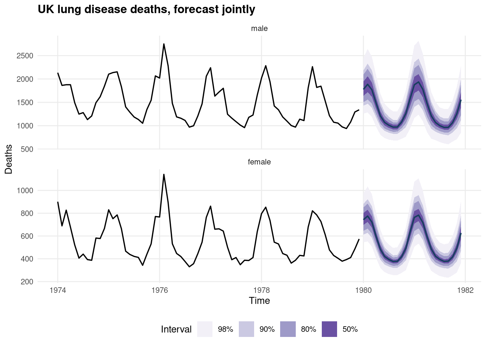
autoplot() facets by variate.Batches are independent series forecast in one call. Pass a list of series (or a 3-D array). The series must have the same length, and the result gains a leading series dimension. A time index shared by every series in the list is kept.
batch <- list(total = ldeaths, male = mdeaths, female = fdeaths)
fc_b <- timestral_forecast(m, batch, h = 24)
dim(fc_b$quantiles)
#> [1] 3 1 24 21
dimnames(fc_b$quantiles)$series
#> [1] "total" "male" "female"
plots <- lapply(seq_along(batch), function(i)
autoplot(fc_b, series = i) +
labs(subtitle = names(batch)[i], x = NULL, y = NULL))
wrap_plots(plots, ncol = 1, guides = "collect") +
plot_annotation(title = "A batch of three series in one call") &
theme(legend.position = "bottom")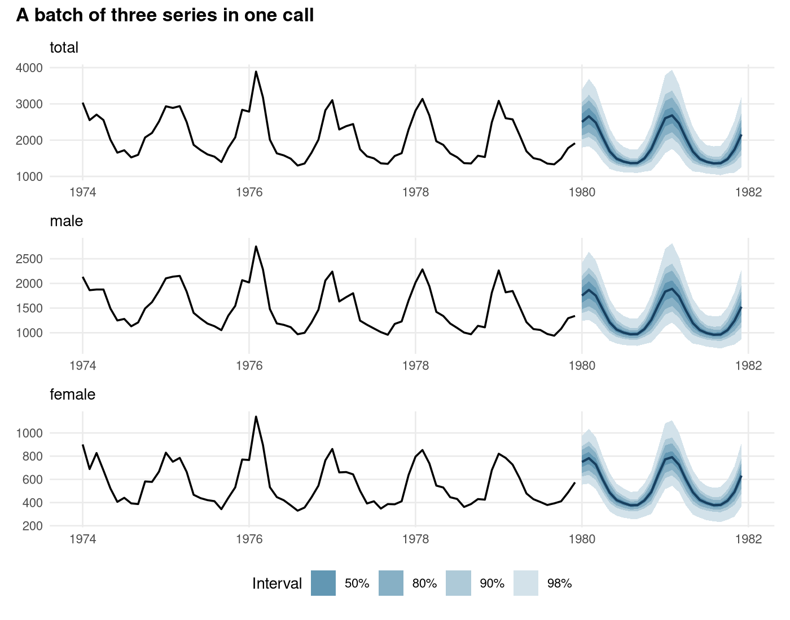
Batching is faster than looping because the series share every matrix product. Each series is still forecast independently: the results match one-at-a-time forecasts.
fc_one <- timestral_forecast(m, mdeaths, h = 24)
max(abs(fc_b$quantiles["male", 1, , ] - fc_one$quantiles[1, , ]))
#> [1] 6.821e-124. Missing values and observation masks
NA values in y are treated as missing, so
no imputation is needed. Below, a whole year of the passengers series is
lost:
ap_gap <- AirPassengers
window(ap_gap, start = c(1955, 1), end = c(1955, 12)) <- NA
fc_gap <- timestral_forecast(m, ap_gap, h = 36)
autoplot(fc_gap) +
labs(title = "A year of missing data in the context",
y = "Passengers (thousands)")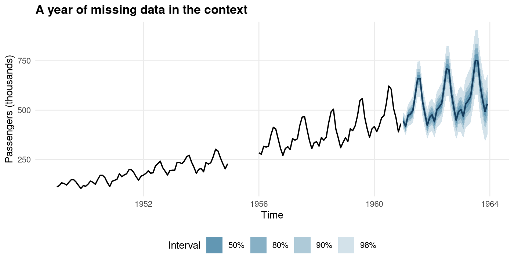
An observation_mask (logical, shaped like
y) marks extra values as missing without editing the data.
This is useful for excluding known anomalies. Here a data-entry error
multiplies one month by ten. Masking that month removes its influence on
the forecast:
ap_bad <- AirPassengers
ap_bad[length(ap_bad) - 3] <- 10 * ap_bad[length(ap_bad) - 3]
mask <- rep(TRUE, length(ap_bad))
mask[length(ap_bad) - 3] <- FALSE
fc_raw <- timestral_forecast(m, ap_bad, h = 24)
fc_masked <- timestral_forecast(m, ap_bad, h = 24, observation_mask = mask)
lims <- c(0, 1500)
(autoplot(fc_raw) + coord_cartesian(ylim = lims) +
labs(subtitle = "outlier used")) +
(autoplot(fc_masked) + coord_cartesian(ylim = lims) +
labs(subtitle = "outlier masked")) +
plot_layout(guides = "collect") &
labs(x = NULL, y = NULL) & theme(legend.position = "bottom")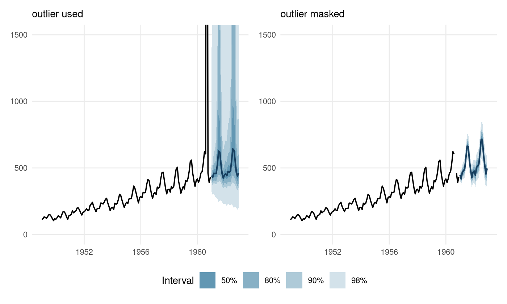
observation_mask (right).5. Covariates
Timestral can condition on covariates of three kinds:
-
past_covariates: known over the context only (T rows), such as a leading indicator that has no forecast; -
known_covariates: known over the context and the horizon (T + h rows), such as planned promotions, prices or holidays; -
categorical_past_covariatesandcategorical_known_covariates: integer category codes (weekday, store type, …), target-encoded internally.
Covariates are passed with time in rows, one column per covariate. As an example, here are simulated daily sales of a product with a weekly pattern and occasional promotions that lift sales by about 60%. The promotion calendar is planned, so it is also known for the 8 weeks we want to forecast.
n_ctx <- 364; h <- 56; n <- n_ctx + h
day <- seq_len(n)
weekday <- (day - 1) %% 7 # 0 = Monday
promo <- as.numeric(runif(n) < 0.12)
promo[n_ctx + c(5, 6, 19, 20, 33, 34, 47, 48)] <- 1 # planned promotions
base <- 100 + 0.05 * day + c(0, -5, -5, 0, 10, 25, 15)[weekday + 1]
sales <- base * (1 + 0.6 * promo) * exp(rnorm(n, sd = 0.05))
y_ctx <- sales[seq_len(n_ctx)]
ggplot(data.frame(day = day, sales = sales, promo = factor(promo)),
aes(day, sales)) +
geom_line(colour = "grey40", linewidth = 0.3) +
geom_point(aes(colour = promo), size = 0.7) +
geom_vline(xintercept = n_ctx + 0.5, linetype = 2) +
scale_colour_manual(values = c("0" = "grey40", "1" = "#D55E00"),
labels = c("regular day", "promotion"), name = NULL) +
labs(title = "Simulated daily sales; the dashed line ends the context",
x = "Day", y = "Sales")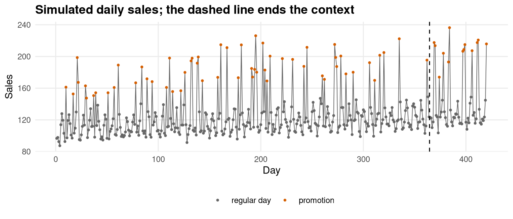
Without covariates the model sees the spikes in the history but cannot know when the next ones will happen. Passing the promotion calendar as a known covariate, and the weekday as a categorical known covariate, lets it place them:
fc_plain <- timestral_forecast(m, y_ctx, h = h)
fc_cov <- timestral_forecast(
m, y_ctx, h = h,
known_covariates = cbind(promo = promo),
categorical_known_covariates = cbind(weekday = weekday)
)
cov_panel <- function(f, title) {
qs <- f$quantiles[1, , ]
d <- data.frame(day = n_ctx + seq_len(h), actual = sales[n_ctx + seq_len(h)],
lo = qs[, "0.10"], hi = qs[, "0.90"], med = qs[, "0.50"])
hist <- data.frame(day = (n_ctx - 55):n_ctx, sales = y_ctx[(n_ctx - 55):n_ctx])
ggplot(d, aes(day)) +
geom_ribbon(aes(ymin = lo, ymax = hi), fill = "#6BAED6", alpha = 0.5) +
geom_line(data = hist, aes(day, sales), colour = "grey30", linewidth = 0.4) +
geom_line(aes(y = med), colour = "#08519C", linewidth = 0.6) +
geom_point(aes(y = actual), colour = "#D55E00", size = 0.9) +
labs(subtitle = title, x = "Day", y = "Sales")
}
cov_panel(fc_plain, "no covariates") /
cov_panel(fc_cov, "promotion calendar + weekday as known covariates") +
plot_annotation(
title = "Median and 80% interval; dots are the held-out actuals")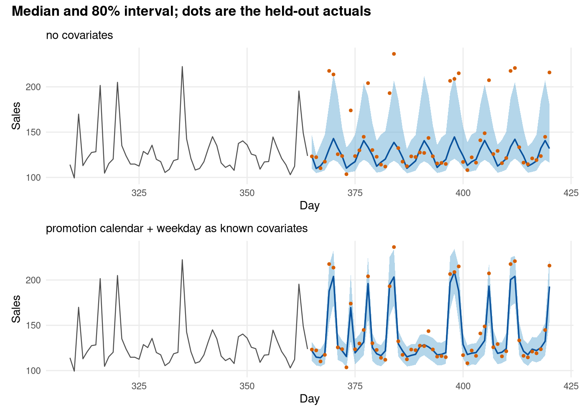
A simple score shows the gain, using the mean absolute error of the median and the mean pinball (quantile) loss over all 21 levels:
actual <- sales[n_ctx + seq_len(h)]
pinball <- function(f) {
qs <- f$quantiles[1, , ]
mean(sapply(seq_along(f$levels), function(j) {
e <- actual - qs[, j]
mean(pmax(f$levels[j] * e, (f$levels[j] - 1) * e))
}))
}
data.frame(
model = c("no covariates", "with covariates"),
MAE = c(mean(abs(actual - fc_plain$quantiles[1, , "0.50"])),
mean(abs(actual - fc_cov$quantiles[1, , "0.50"]))),
pinball = c(pinball(fc_plain), pinball(fc_cov))
)
#> model MAE pinball
#> 1 no covariates 21.483 7.613
#> 2 with covariates 7.586 2.634Past-only covariates use the same row layout over the context only,
for example
past_covariates = cbind(footfall = footfall[1:n_ctx]). For
a batch, give a list with one covariate matrix per series.
6. Time indexes: ts, zoo and
xts
A ts input keeps its time attributes, as above.
zoo and xts inputs keep their index (Dates,
POSIXct, …). The forecast stores a future_index that
extends the last observed interval, and as_forecast_df()
reports real dates.
library(zoo)
dates <- as.Date("2024-01-01") + seq_len(n) - 1
sales_z <- zoo(sales, order.by = dates)
fc_z <- timestral_forecast(m, sales_z[seq_len(n_ctx)], h = 14)
head(as_forecast_df(fc_z)[, c("time", "q10", "q50", "q90")], 4)
#> time q10 q50 q90
#> 1 2024-12-30 109.3 123.6 146.8
#> 2 2024-12-31 104.8 109.9 124.7
#> 3 2025-01-01 105.9 112.8 135.9
#> 4 2025-01-02 107.9 118.9 147.3When y and a covariate both carry a time index, the
indexes must line up. This catches off-by-one and misaligned joins
early:
promo_z <- zoo(cbind(promo = promo), order.by = dates + 1) # shifted a day
tryCatch(
timestral_forecast(m, sales_z[seq_len(n_ctx)], h = 14,
known_covariates = promo_z[seq_len(n_ctx + 14)]),
error = function(e) conditionMessage(e)
)
#> [1] "known_covariates time index does not align with the time index of y"7. The tidyverts
tsibble input and output
A tsibble can be passed directly. Keys become
the batch and measured variables become jointly
forecast variates. Rows are put in index order, and implicit
gaps in a regular tsibble are filled with missing values. Here are
quarterly holiday trips to four Australian states:
library(tsibble)
library(dplyr)
holidays <- tourism |>
filter(Purpose == "Holiday",
State %in% c("New South Wales", "Victoria",
"Queensland", "Western Australia")) |>
group_by(State) |>
summarise(Trips = sum(Trips)) |>
ungroup()
holidays
#> # A tsibble: 320 x 3 [1Q]
#> # Key: State [4]
#> State Quarter Trips
#> <chr> <qtr> <dbl>
#> 1 New South Wales 1998 Q1 4033.
#> 2 New South Wales 1998 Q2 3262.
#> 3 New South Wales 1998 Q3 2681.
#> 4 New South Wales 1998 Q4 3083.
#> 5 New South Wales 1999 Q1 3635.
#> 6 New South Wales 1999 Q2 2958.
#> 7 New South Wales 1999 Q3 2768.
#> 8 New South Wales 1999 Q4 3121.
#> 9 New South Wales 2000 Q1 3548.
#> 10 New South Wales 2000 Q2 2840.
#> # ℹ 310 more rows
fc_ts <- timestral_forecast(m, holidays, h = 12)
dim(fc_ts$quantiles) # series x variate x step x level
#> [1] 4 1 12 21
as_tsibble(fc_ts) |> select(series, Quarter, q10, q50, q90)
#> # A tsibble: 48 x 5 [1Q]
#> # Key: series [4]
#> series Quarter q10 q50 q90
#> <chr> <qtr> <dbl> <dbl> <dbl>
#> 1 New South Wales 2018 Q1 3472. 3738. 4030.
#> 2 New South Wales 2018 Q2 2962. 3237. 3545.
#> 3 New South Wales 2018 Q3 2921. 3207. 3505.
#> 4 New South Wales 2018 Q4 2987. 3297. 3606.
#> 5 New South Wales 2019 Q1 3394. 3750. 4097.
#> 6 New South Wales 2019 Q2 2952. 3287. 3638.
#> 7 New South Wales 2019 Q3 2905. 3259. 3621.
#> 8 New South Wales 2019 Q4 2988. 3350. 3719.
#> 9 New South Wales 2020 Q1 3357. 3795. 4223.
#> 10 New South Wales 2020 Q2 2931. 3336. 3755.
#> # ℹ 38 more rowsas_tsibble() keeps the input’s index name and class
(here yearquarter), so forecasts join directly with the
observed data. For ts input, the index gets the same class
that tsibble::as_tsibble() gives the ts
(yearmonth, yearquarter, …).
fc_long <- as_tsibble(fc_ts) |> as_tibble() |> rename(State = series)
recent <- holidays |> filter(Quarter >= yearquarter("2010 Q1"))
ggplot(mapping = aes(Quarter)) +
geom_ribbon(data = fc_long, aes(ymin = q01, ymax = q99), fill = "#DCE9F3") +
geom_ribbon(data = fc_long, aes(ymin = q10, ymax = q90), fill = "#8FB6D2") +
geom_line(data = recent, aes(y = Trips), linewidth = 0.4) +
geom_line(data = fc_long, aes(y = q50), colour = "#173F5F", linewidth = 0.7) +
facet_wrap(~State, scales = "free_y", ncol = 2) +
labs(title = "Holiday trips by state: median, 80% and 98% intervals",
x = NULL, y = "Trips (thousands)")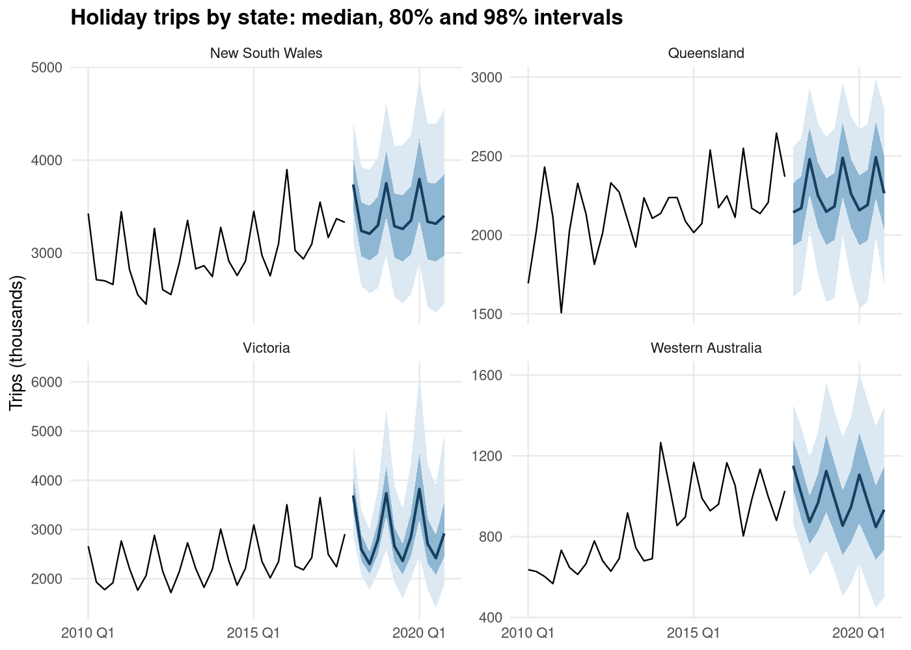
as_fable() converts a forecast to a fable whose
distribution column holds the 21-quantile distribution, so fable tooling
such as hilo(), accuracy() and
autoplot() applies:
library(fabletools)
fbl <- as_fable(fc_ts)
fbl
#> # A fable: 48 x 3 [1Q]
#> # Key: series [4]
#> series Quarter Trips
#> <chr> <qtr> <dist>
#> 1 New South Wales 2018 Q1 quantile[21]
#> 2 New South Wales 2018 Q2 quantile[21]
#> 3 New South Wales 2018 Q3 quantile[21]
#> 4 New South Wales 2018 Q4 quantile[21]
#> 5 New South Wales 2019 Q1 quantile[21]
#> 6 New South Wales 2019 Q2 quantile[21]
#> 7 New South Wales 2019 Q3 quantile[21]
#> 8 New South Wales 2019 Q4 quantile[21]
#> 9 New South Wales 2020 Q1 quantile[21]
#> 10 New South Wales 2020 Q2 quantile[21]
#> # ℹ 38 more rows
fbl |> filter(series == "Victoria") |> hilo(80) |> head(4)
#> # A tsibble: 4 x 4 [1Q]
#> # Key: series [1]
#> series Quarter Trips `80%`
#> <chr> <qtr> <dist> <hilo>
#> 1 Victoria 2018 Q1 quantile[21] [3391, 4102]80
#> 2 Victoria 2018 Q2 quantile[21] [2366, 2899]80
#> 3 Victoria 2018 Q3 quantile[21] [2102, 2544]80
#> 4 Victoria 2018 Q4 quantile[21] [2506, 3149]80Timestral as a fable model
TIMESTRAL() is a model definition for
fabletools::model(). It sits alongside ETS, ARIMA and the
rest, and it works with fable’s cross-key machinery, forecasting and
accuracy tools. The response is univariate; each key gets its own
context. Here we hold out the last three years, fit three models per
state, and compare them.
library(fable)
train_tb <- holidays |> filter(Quarter <= yearquarter("2014 Q4"))
test_tb <- holidays |> filter(Quarter > yearquarter("2014 Q4"))
fit <- train_tb |>
model(
Timestral = TIMESTRAL(Trips, model = m),
ETS = ETS(Trips),
ARIMA = ARIMA(Trips)
)
fit
#> # A mable: 4 x 4
#> # Key: State [4]
#> State Timestral ETS ARIMA
#> <chr> <model> <model> <model>
#> 1 New South Wales <TIMESTRAL> <ETS(A,N,A)> <ARIMA(0,0,0)(0,1,1)[4] w/ drift>
#> 2 Queensland <TIMESTRAL> <ETS(A,N,A)> <ARIMA(0,0,0)(1,0,0)[4] w/ mean>
#> 3 Victoria <TIMESTRAL> <ETS(M,N,M)> <ARIMA(1,0,1)(0,1,1)[4]>
#> 4 Western Australia <TIMESTRAL> <ETS(M,N,A)> <ARIMA(1,0,1)(0,1,1)[4]>
fc_fbl <- fit |> forecast(h = "3 years")
library(ggtime) # fable's plotting methods live in ggtime
fc_fbl |>
autoplot(holidays |> filter(Quarter >= yearquarter("2011 Q1")),
level = c(80, 95)) +
facet_grid(State ~ .model, scales = "free_y") +
scale_colour_brewer(palette = "Set1", aesthetics = c("colour", "fill")) +
guides(colour = "none", fill = "none") +
theme(strip.text.y = element_text(size = 7)) +
labs(title = "Three years ahead: Timestral, ETS and ARIMA (80% and 95% intervals)",
x = NULL, y = "Trips (thousands)")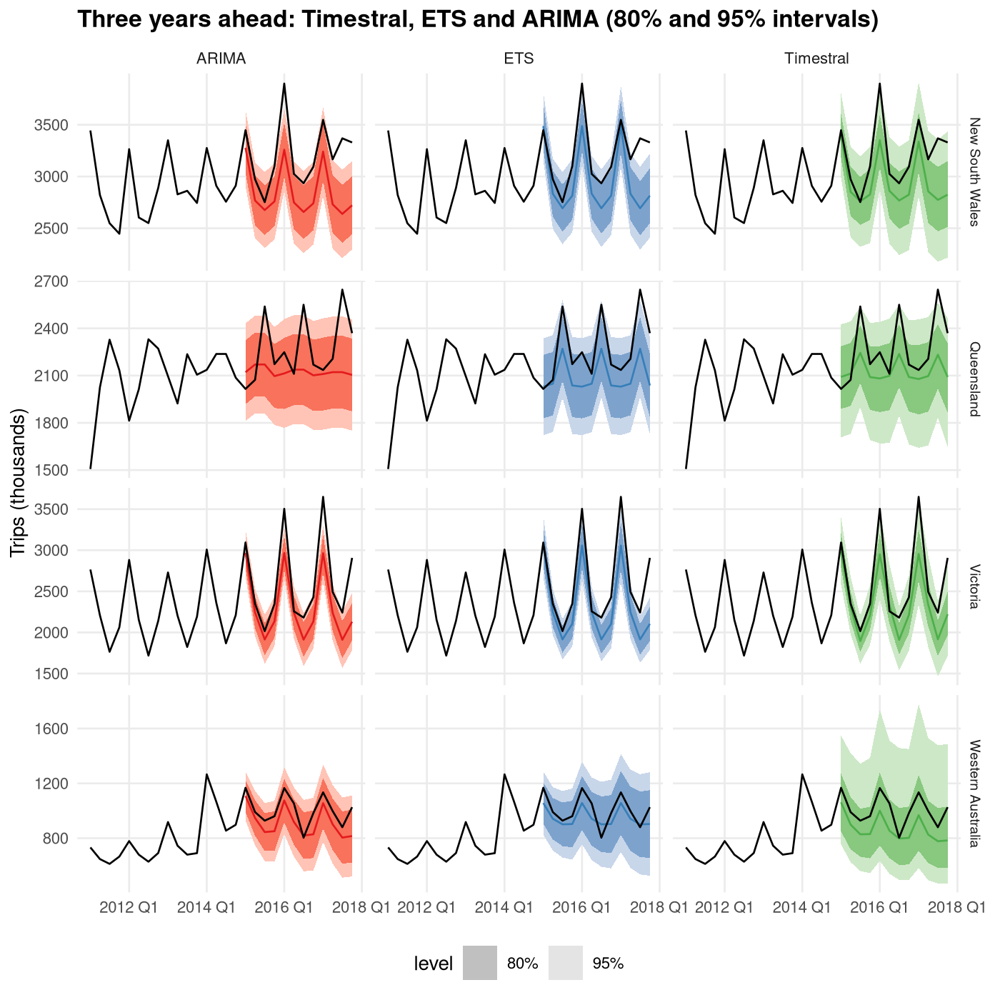
Because the forecasts are proper distributions, fable’s accuracy measures, including the continuous ranked probability score (CRPS), evaluate the whole predictive distribution:
fc_fbl |>
accuracy(holidays, measures = list(RMSE = RMSE, MASE = MASE,
CRPS = CRPS)) |>
group_by(.model) |>
summarise(across(c(RMSE, MASE, CRPS), mean)) |>
arrange(CRPS)
#> # A tibble: 3 × 4
#> .model RMSE MASE CRPS
#> <chr> <dbl> <dbl> <dbl>
#> 1 ETS 247. 1.51 151.
#> 2 Timestral 260. 1.64 159.
#> 3 ARIMA 288. 1.76 178.Fitted models store a small handle to the checkpoint, not the
weights. A mable therefore stays small when saved with
saveRDS(), and it keeps working in a new R session or a
parallel worker; the checkpoint is reloaded from disk when needed. The
whole mable, with its three models for four states and the training
data, is a fraction of the size of the weights:
The forecast package
The forecast package has its own forecast() generic, and
calling it with a Timestral model returns a "forecast"
object, so accuracy(), autoplot() and the rest
of that package’s tools work as for ETS or ARIMA.
(timestral_as_forecast() converts a forecast you already
have.) The intervals come straight from the quantile knots, which are
not interpolated, so each level must pair two knots: the default is 80%
and 98%, because the 21 knots have no 2.5% and 97.5% quantiles for the
usual 95%.
ap_train <- window(AirPassengers, end = c(1957, 12))
ap_test <- window(AirPassengers, start = c(1958, 1))
fo <- forecast::forecast(m, ap_train, h = 36)
forecast::accuracy(fo, ap_test)
#> ME RMSE MAE MPE MAPE MASE ACF1 Theil's U
#> Training set NaN NaN NaN NaN NaN NaN NA NA
#> Test set -6.498 17.24 14.54 -2.006 3.583 0.4755 0.49 0.3932The training-set row is empty because a zero-shot model is not fitted to the context, so there are no in-sample fitted values.
autoplot(fo) +
autolayer(ap_test, series = "held out") +
labs(title = "Timestral via forecast::forecast() (80% and 98% intervals)",
x = NULL, y = "Passengers (thousands)", colour = NULL)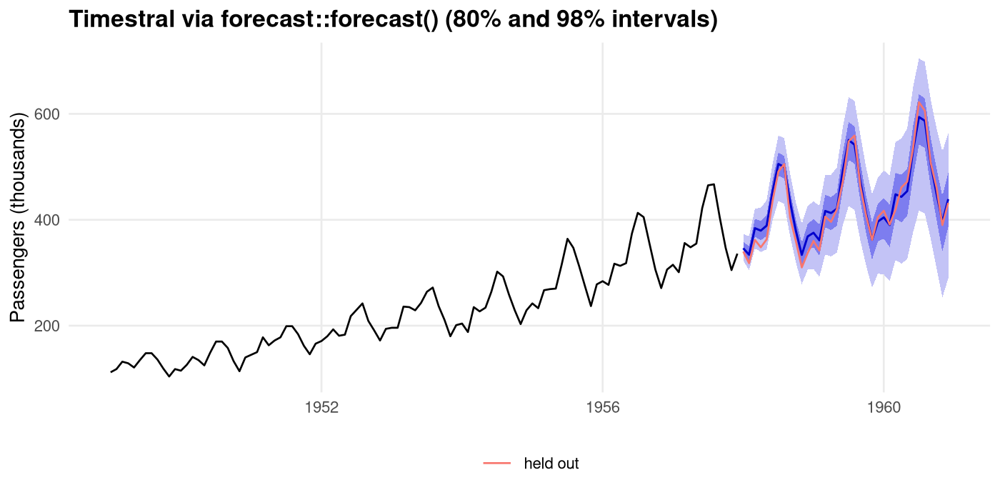
8. Evaluating forecasts
timestral_score() scores a forecast against the values
that were later observed, one row per step. Besides the absolute error
of the median (ae) it reports two scores of the whole
predictive distribution: the pinball (quantile) loss averaged over the
21 levels (pinball), and an approximation of the continuous
ranked probability score (crps). It also reports whether
each step fell inside the 80% and 98% intervals. Lower scores are
better, and for a point forecast both distribution scores reduce to
(about) the absolute error. Here is the section 2 backtest, scored:
sc <- timestral_score(fc_bt, test)
head(sc, 3)
#> series variate step actual median pinball crps ae cover80 cover98
#> 1 S1 V1 1 340 346.2 3.67 3.808 6.178 TRUE TRUE
#> 2 S1 V1 2 318 334.0 10.13 10.583 15.986 FALSE TRUE
#> 3 S1 V1 3 362 384.0 14.83 15.501 22.045 FALSE TRUE
colMeans(sc[, c("ae", "pinball", "crps", "cover80", "cover98")])
#> ae pinball crps cover80 cover98
#> 14.5363 10.6317 11.0107 0.8333 1.0000One held-out window says little. timestral_backtest()
repeats the forecast from several origins, each time using only
the data up to the origin, and scores every forecast. Here the origin
moves forward a year at a time over the last six years of
AirPassengers, with a 12-month horizon each time:
bt <- timestral_backtest(m, AirPassengers, h = 12,
origins = seq(72, 132, by = 12))
head(bt[, c("origin", "step", "t", "actual", "median", "crps")], 3)
#> origin step t actual median crps
#> 1 72 1 73 242 230.4 7.265
#> 2 72 2 74 233 226.3 4.197
#> 3 72 3 75 267 265.6 3.259
aggregate(cbind(ae, crps, cover80, cover98) ~ origin, data = bt, FUN = mean)
#> origin ae crps cover80 cover98
#> 1 72 20.257 13.617 0.5833 1
#> 2 84 10.400 7.721 1.0000 1
#> 3 96 12.621 8.757 0.9167 1
#> 4 108 20.281 13.796 0.5000 1
#> 5 120 28.069 18.242 0.5000 1
#> 6 132 9.231 8.027 0.9167 1Averaging by forecast step shows how accuracy falls off with the horizon:
by_step <- aggregate(cbind(ae, crps) ~ step, data = bt, FUN = mean)
ggplot(rbind(data.frame(step = by_step$step, score = "absolute error",
value = by_step$ae),
data.frame(step = by_step$step, score = "CRPS",
value = by_step$crps)),
aes(step, value, colour = score)) +
geom_line() + geom_point(size = 1) +
scale_x_continuous(breaks = 1:12) +
labs(title = "Backtest accuracy by forecast step", x = "Months ahead",
y = "Mean score (thousands)", colour = NULL)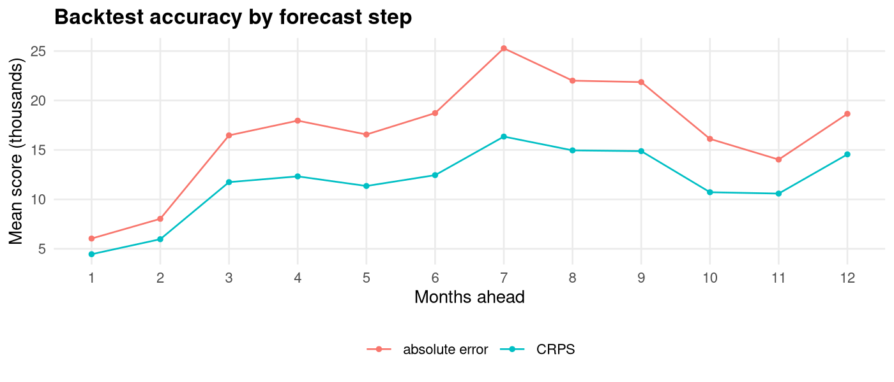
Covariates and observation_mask are passed over the
whole series and cut to each origin: past-only covariates and the mask
to the context, known-future covariates to the context plus the horizon.
A list of equal-length series is backtested as a batch at each origin.
The backtest runs one origin after another; to spread origins over
cores, split them and run one backtest per chunk (see
?timestral_backtest and the next section). For tsibbles,
the fable route covers the same ground:
tsibble::stretch_tsibble(), the TIMESTRAL()
model and accuracy().
9. Options, backends and parallel use
The main options of timestral_forecast():
-
symmetric = TRUE(default) averages the forecast with that of the mirrored series (-y), which removes sign bias; -
clip_nonnegative = TRUE(default) clips quantiles at zero when every observed value is non-negative.
timestral_load() controls the decoding:
-
max_contextcaps the context length (the default is the trained context length); -
per_shot_horizon_patchessets how many 32-step patches are decoded per block before the median is fed back for long horizons; -
quantile_real_cap_kandextreme_value_thresholdare safety clamps for extreme inputs.
Backends
The default "native" backend runs the transformer in
compiled RcppEigen code. backend = "R" uses the pure-R
reference implementation, which is slower but easy to read and step
through. The two agree to floating-point precision:
m_R <- timestral_load("28M", backend = "R")
f1 <- timestral_forecast(m, AirPassengers, h = 36)
f2 <- timestral_forecast(m_R, AirPassengers, h = 36)
max(abs(f1$quantiles - f2$quantiles))
#> [1] 1.137e-12
# median time in seconds over three runs
timing <- function(model) median(replicate(3, system.time(
timestral_forecast(model, AirPassengers, h = 36))[["elapsed"]]))
c(native = timing(m), R = timing(m_R))
#> native R
#> 0.059 0.091Parallel use
The native code is deliberately single-threaded: no
OpenMP, no thread pools, and no changes to BLAS threading. Parallelise
at the R level instead (parallel, future,
mirai, …), with one model per worker. For many series of
the same length, batching (section 3) is usually the faster option; for
a long backtest, split the origins between workers.
library(parallel)
series <- split(holidays$Trips, holidays$State)
fcs <- mclapply(series, function(y) {
m <- timestral_load("28M") # cached on disk; cheap to load
timestral_forecast(m, y, h = 12)
}, mc.cores = 4)Session information
sessionInfo()
#> R version 4.6.1 (2026-06-24)
#> Platform: x86_64-redhat-linux-gnu
#> Running under: Fedora Linux 44 (Workstation Edition)
#>
#> Matrix products: default
#> BLAS/LAPACK: FlexiBLAS OPENBLAS-OPENMP; LAPACK version 3.12.1
#>
#> locale:
#> [1] LC_CTYPE=C.UTF-8 LC_NUMERIC=C LC_TIME=C.UTF-8
#> [4] LC_COLLATE=C.UTF-8 LC_MONETARY=C.UTF-8 LC_MESSAGES=C.UTF-8
#> [7] LC_PAPER=C.UTF-8 LC_NAME=C LC_ADDRESS=C
#> [10] LC_TELEPHONE=C LC_MEASUREMENT=C.UTF-8 LC_IDENTIFICATION=C
#>
#> time zone: Africa/Johannesburg
#> tzcode source: system (glibc)
#>
#> attached base packages:
#> [1] stats graphics grDevices utils datasets methods base
#>
#> other attached packages:
#> [1] ggtime_1.1.0 fable_0.5.0 fabletools_0.8.0 dplyr_1.2.1
#> [5] tsibble_1.2.0 zoo_1.9-0 patchwork_1.3.2 ggplot2_4.0.3
#> [9] timestralR_0.5.0
#>
#> loaded via a namespace (and not attached):
#> [1] ggdist_3.3.3 utf8_1.2.6 generics_0.1.4
#> [4] tidyr_1.3.2 anytime_0.3.13 lattice_0.22-9
#> [7] digest_0.6.39 magrittr_2.0.5 evaluate_1.0.5
#> [10] grid_4.6.1 timechange_0.4.0 RColorBrewer_1.1-3
#> [13] mixtime_0.4.0 jsonlite_2.0.0 feasts_0.5.0
#> [16] forecast_9.0.2 purrr_1.2.2 scales_1.4.0
#> [19] cli_3.6.6 rlang_1.3.0 vecvec_1.4.0
#> [22] withr_3.0.3 otel_0.2.0 tools_4.6.1
#> [25] parallel_4.6.1 tzdb_0.5.0 colorspace_2.1-4
#> [28] vctrs_0.7.3 R6_2.6.1 lifecycle_1.0.5
#> [31] lubridate_1.9.5 pkgconfig_2.0.3 urca_1.3-4
#> [34] progressr_1.1.0 pillar_1.11.1 gtable_0.3.6
#> [37] glue_1.8.1 Rcpp_1.1.2 xfun_0.60
#> [40] tibble_3.3.1 tidyselect_1.2.1 knitr_1.51
#> [43] farver_2.1.2 nlme_3.1-169 labeling_0.4.3
#> [46] timeDate_4052.112 fracdiff_1.5-4 compiler_4.6.1
#> [49] S7_0.2.2 distributional_0.9.0